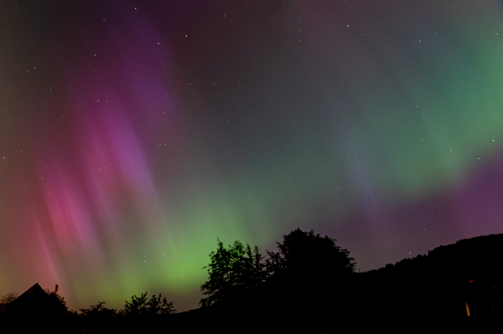
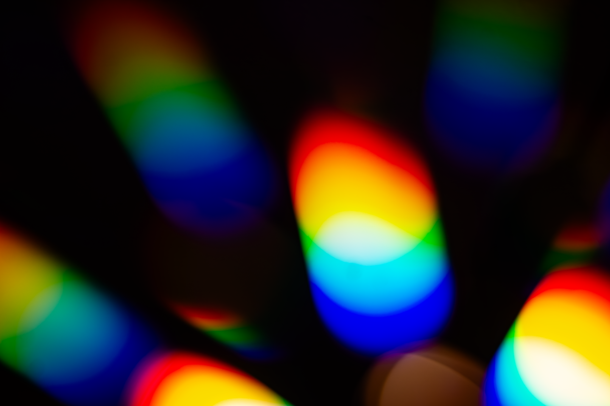
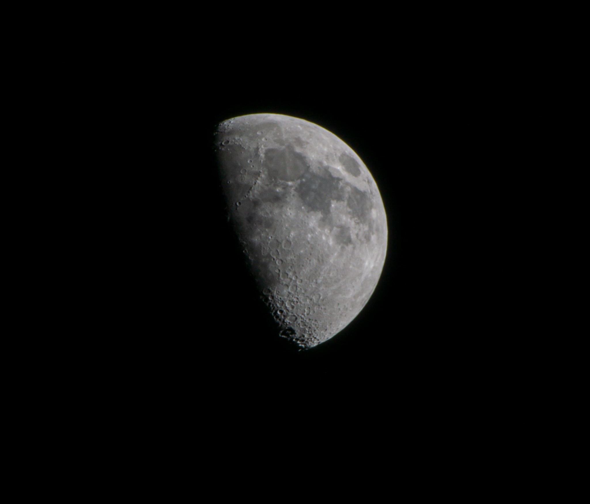
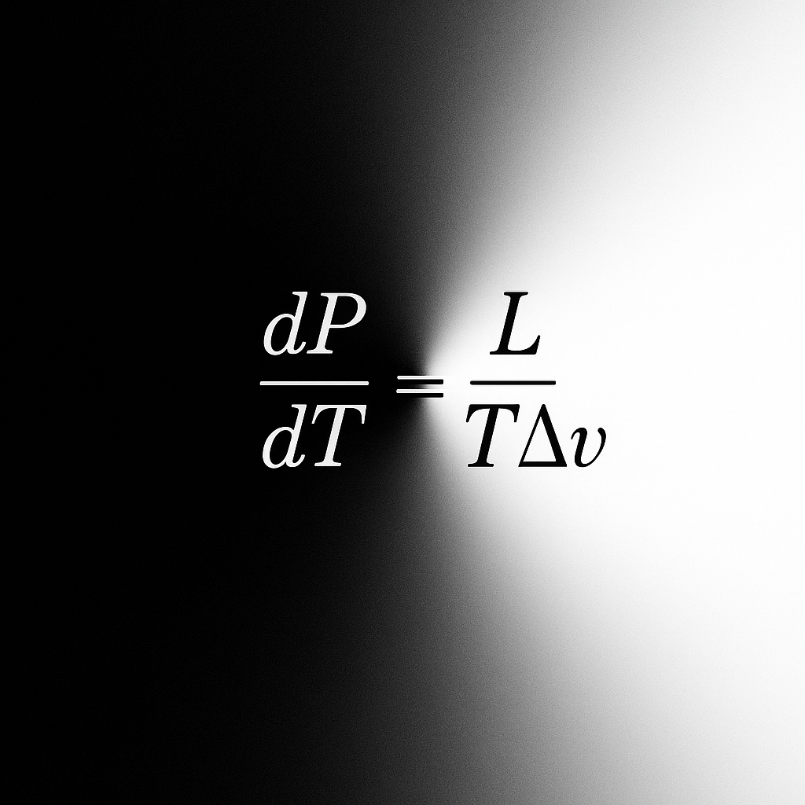
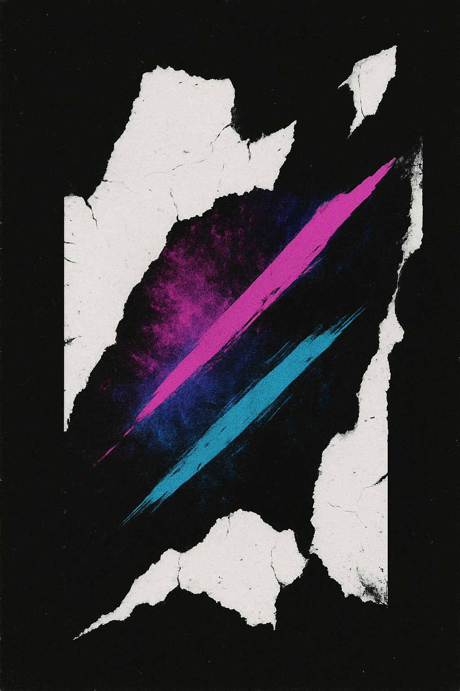
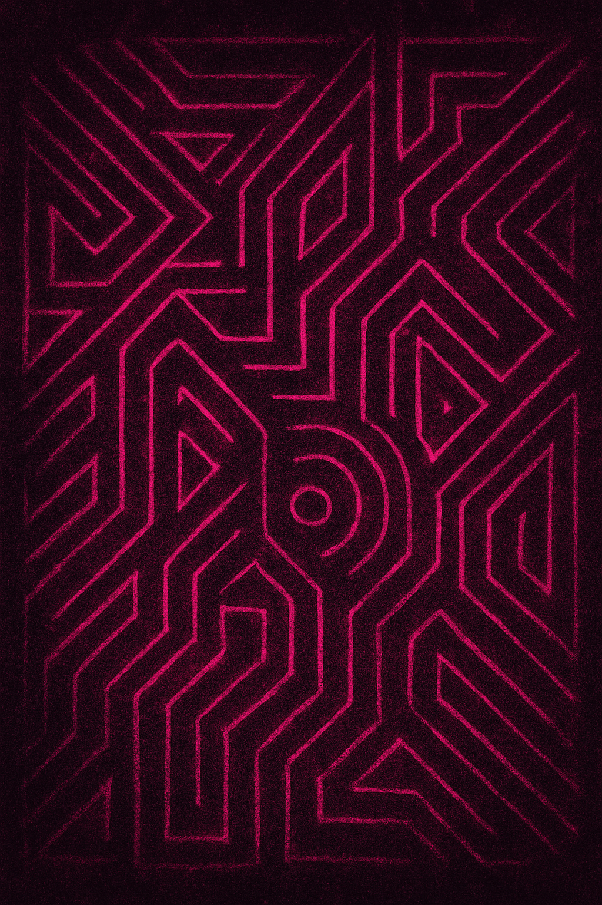

Medien Diese Seite bietet einen Einblick in meine visuelle und kreative Arbeit. Sie zeigt ausgewählte Impressionen aus Fotografie, Musik, Design und digitalen Konzepten – als Sammlung von Ideen, Stilübungen und experimentellen Ansätzen.
Clausius-Clapeyron, Neonform I und Neonform II: KI-generierte Grafiken.

Polarlicht über Nordhessen – Aufnahme des geomagnetischen Sturms vom Mai 2024 
Spektrale Beugung – Lichtzerlegung durch Gitterinterferenz 
Mondbeobachtung – Libration und Kraterstruktur bei zunehmender Phase 
Clausius-Clapeyron-Beziehung – Temperatur-Druck-Gradient bei Phasenübergängen 
Neonform I – Digitale Komposition mit additiver Farbmischung (Magenta / Cyan) 
Neonform II – Strukturkomposition aus Rissmustern und Farbverläufen Hinweis: Die hier dargestellten Inhalte dienen ausschließlich zur Veranschaulichung und sind persönliche künstlerische Arbeiten im Rahmen meiner freiberuflichen Tätigkeit. Die Fotografien von Polarlicht, spektraler Beugung und Mond sind © 2026 Daniel S.M. Möhle. Alle bestehenden Urheber- und Leistungsschutzrechte bleiben vorbehalten. Soweit gesetzlich erforderlich, bedarf eine Nutzung meiner Zustimmung; gesetzlich erlaubte Nutzungen bleiben unberührt.
×
{kind=link}
{kind=link}
{kind=link}
{kind=link}
{kind=link}
{kind=link}